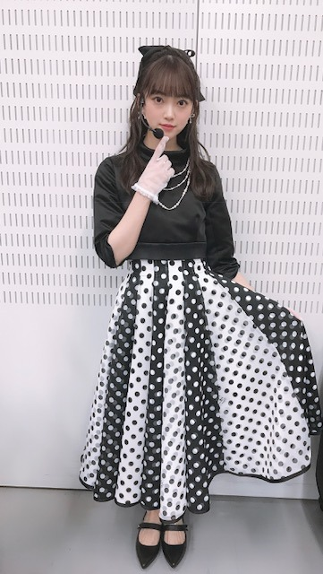
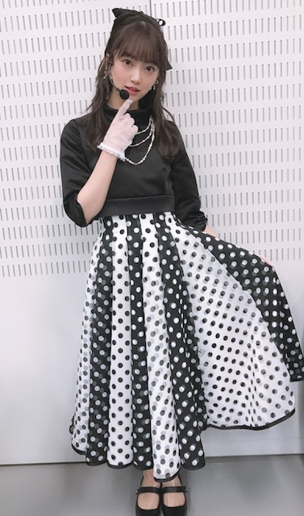
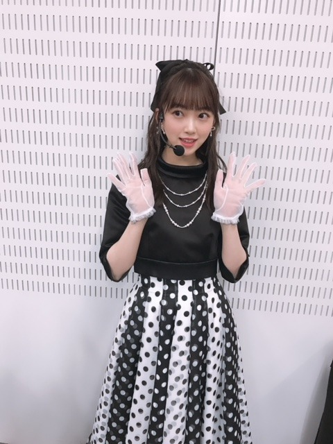
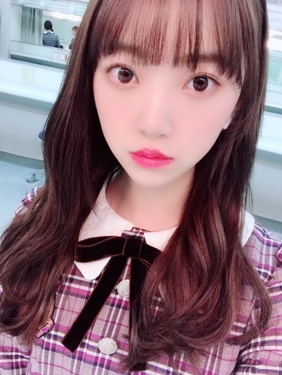

2019/0202Satオードリーヘップバーン
昨日のmステ3時間sp
観てくださった皆さん
ありがとうございました✨
ファンの方や友達、いろんな人が
観ててくれて嬉しかったなぁ
髪型はギリギリまで悩んで、
最初はハーフアップにしてたけど
本番前にポニーテールに変えました！
今回の衣装テーマは
オードリーヘップバーン☺︎
髪型変える前の幻のハーフアップを。



いつかまたこの髪型もやりますね！
横浜で開催されていたオードリーヘップバーン展には行けなかったけどお顔はもちろんファッションやメイク、佇まいも絵になる素敵な女性で画像や映像では拝見していたので嬉しかった〜
私的にヘップバーンを意識したポイントは
キリッとした太めの眉毛
口紅はうるつや赤リップ
前髪は眉毛合わせでまっすぐめにおろす
下まつげにもマスカラ
です！
女性らしくもあるけど
力強さもありドーリー感を出せるように
工夫してみました✨✨
しかし、外寒かったなぁ。笑
でも良き思い出でした！
ライブみたいで楽しかった！
明日は握手会☺︎
皆さんのおすすめの映画、アーティストの曲
教えてくださ〜い
あと、私の好きなところも♡笑
待ってますよ？o(^-^)o笑

では！
インフルエンザ流行ってるので
手洗いうがいマスクは必須です
風邪予防して元気に2月も乗り切りましょう〜
私も気をつける〜
あ！！
握手会で見たい服と髪型教えて^ ^
2019/02/02 15:54
コメント(482)
昨日めちゃくちゃ可愛かったよ(,,> <,,)♡編み込みヘアでガーリー系な服装が見たい！！
やっぱり、真っ白な服とかいいよね！
あ！Mステ最高でした！
本当にありがとう！
あ！Mステ最高でした！
本当にありがとう！
みおなーーーー
Mステむっちゃ良かった！！
ポニーテールして欲しい！
ポニーテールして欲しい！
みおなブログ更新ありがとう！！
明日の握手会行くんだけど、おさげ見たいなぁ〜
ということで楽しみにしてます！
明日の握手会行くんだけど、おさげ見たいなぁ〜
ということで楽しみにしてます！
未央奈ちゃんこんばんは‼ありがとうございます！楽しみにしてます‼頑張ります‼頑張って下さい！ありがとうございます！楽しみにしてます‼
みおなブログ更新ありがとう！
Mステ見た〜可愛すぎた！
Mステ見た〜可愛すぎた！
ドイツ映画の「帰ってきたヒトラー」
昨日観たんですが、風刺も利いてて面白かったです。政治を考えるきっかけにも！
昨日観たんですが、風刺も利いてて面白かったです。政治を考えるきっかけにも！
Mステお疲れ様!!観たよー(* ॑꒳ ॑* )⋆*
好きなアーティストは、乃木坂46さん、菅田将暉さん、あいみょんさんが好きかな〜☺️
好きなアーティストは、乃木坂46さん、菅田将暉さん、あいみょんさんが好きかな〜☺️
すごくかわいいです
ずっと応援してます笑
頑張ってください！
体には気おつけてくださいね！笑
ずっと応援してます笑
頑張ってください！
体には気おつけてくださいね！笑
ハーフツインしてくるりんぱ！
未央奈ちゃんどんどん可愛くなる、、
未央奈ちゃんどんどん可愛くなる、、
ブログ更新ありがとう！
Mステお疲れさま！まだ見れてないんだけど録画してあるから絶対見るね！
オードリーヘップバーン風の衣装かわいい❤︎雰囲気に合わせてメイクを変えるみおちゃんが好きです♪
明日の握手でみおちゃんの好きなところたくさん言うから楽しみに待っててね☺︎
髪型はポニーテルとか編み込みとかが見たいな〜！
お洋服はもこもこ、ふわふわ系とかワンピースが見たいな❤︎
Mステお疲れさま！まだ見れてないんだけど録画してあるから絶対見るね！
オードリーヘップバーン風の衣装かわいい❤︎雰囲気に合わせてメイクを変えるみおちゃんが好きです♪
明日の握手でみおちゃんの好きなところたくさん言うから楽しみに待っててね☺︎
髪型はポニーテルとか編み込みとかが見たいな〜！
お洋服はもこもこ、ふわふわ系とかワンピースが見たいな❤︎
紫スナイデル
おお！ハーフアップも可愛い！
Mステまだ見れてないので、早いうちに見ます。
明日の握手会楽しんでください！
Mステまだ見れてないので、早いうちに見ます。
明日の握手会楽しんでください！
久しぶりに未央奈のショートヘア見たいです！！
欲を言うなら前髪少し重めならもっと良きです！！
欲を言うなら前髪少し重めならもっと良きです！！
未央奈〜Mステ可愛かったよ！！
ハーフアップもかわよ.......
握手会行けないけど、行くとしたらポニーテールがいいかな〜
ハーフアップもかわよ.......
握手会行けないけど、行くとしたらポニーテールがいいかな〜
こんばんみーお♪
いつもブログありがとう！
ヘップバーンより素敵だよ〜♪(^^)
年代関係なく良いものって
普遍性があるから
それを真似して新たな派生を生み出すのって
芸術の基本だと思う！！
すべての芸術は模倣からはじまるって、
誰かが言っていた気がする。。曖昧。。
この後、バスラ (土曜日)の発券をして来るよ
祈っていてね〜笑笑
明日の握手の衣装かぁ〜
思うのは、
パジャマからはじまっての
ゆる〜い普段着シリーズもいいかと〜
カントリー風なファションとか、
あえて、60年代くらいのダサめなとこを
攻めるのも新しいかもよ〜
それを続けられたらホンモノになるのかもね！
あと、1部だけかと見せかけて
一日、オールさまざまなパジャマシリーズとか
話題になるかも〜♪
ネグリジェは厳しそうだけど、
いろんなタイプのパジャマで
夜未央奈を演出しても楽しいかもね♪
握手会が出来る期間って一生レベルでみたら
とても短いし、どうせやるなら
主体的に楽しんで、新たなカタチの提案もしていけたら
いいと思うよ♪
ワニが手を挟むかもしれないオモチャとか
傍らに置いておいたら、打ち解けるきっかけ作りや
ランダムなスペイベ発生感があって良いかもね♪
あと、ついでに普段握手レポを読んでいて思う事なんだけど、
オタが変顔を要求した時に、ただ「ムリ〜」と答えるだけだと話が広がらないので、例えば、
「じゃあ、一緒にせいのでしよう！」
って、言ってから、自分だけやらないとか〜
場の空気が笑いに変わると思うよ♪
その後、別れ際に、お詫びのウィンクで駄目押しとか〜笑
何しろ、同じシチュエーションでも、
人を楽しませる事って無限大だと思うし
あらかじめ数パターンを用意しておけば、
オタの「あ。。うん、ごめんね。。。」
のテンションがなくなって、皆んなが最高の笑顔で
みおレーンを出ていくと思う♪(^^)
握手会って、奥が深いね。。。
また、なにか思いついたら書くね☆
あと、最近、色々なスタイリングが
ハマるようになっていると思う。
髪型、化粧、衣装、アクセ。。。
全てをコーデ出来ているように思う！
なんか、オトナミオナがワンステップアップした感じがするよ！
ただ、難しい部分では、
「大人っぽさ」と「ケバさ」って、案外距離が近いから
注意も必要だよね〜
こっちも、奥深で難しいね〜
では、明日楽しみにしているよん♪
よろしくね〜☆(^^)/
わたる⊿
いつもブログありがとう！
ヘップバーンより素敵だよ〜♪(^^)
年代関係なく良いものって
普遍性があるから
それを真似して新たな派生を生み出すのって
芸術の基本だと思う！！
すべての芸術は模倣からはじまるって、
誰かが言っていた気がする。。曖昧。。
この後、バスラ (土曜日)の発券をして来るよ
祈っていてね〜笑笑
明日の握手の衣装かぁ〜
思うのは、
パジャマからはじまっての
ゆる〜い普段着シリーズもいいかと〜
カントリー風なファションとか、
あえて、60年代くらいのダサめなとこを
攻めるのも新しいかもよ〜
それを続けられたらホンモノになるのかもね！
あと、1部だけかと見せかけて
一日、オールさまざまなパジャマシリーズとか
話題になるかも〜♪
ネグリジェは厳しそうだけど、
いろんなタイプのパジャマで
夜未央奈を演出しても楽しいかもね♪
握手会が出来る期間って一生レベルでみたら
とても短いし、どうせやるなら
主体的に楽しんで、新たなカタチの提案もしていけたら
いいと思うよ♪
ワニが手を挟むかもしれないオモチャとか
傍らに置いておいたら、打ち解けるきっかけ作りや
ランダムなスペイベ発生感があって良いかもね♪
あと、ついでに普段握手レポを読んでいて思う事なんだけど、
オタが変顔を要求した時に、ただ「ムリ〜」と答えるだけだと話が広がらないので、例えば、
「じゃあ、一緒にせいのでしよう！」
って、言ってから、自分だけやらないとか〜
場の空気が笑いに変わると思うよ♪
その後、別れ際に、お詫びのウィンクで駄目押しとか〜笑
何しろ、同じシチュエーションでも、
人を楽しませる事って無限大だと思うし
あらかじめ数パターンを用意しておけば、
オタの「あ。。うん、ごめんね。。。」
のテンションがなくなって、皆んなが最高の笑顔で
みおレーンを出ていくと思う♪(^^)
握手会って、奥が深いね。。。
また、なにか思いついたら書くね☆
あと、最近、色々なスタイリングが
ハマるようになっていると思う。
髪型、化粧、衣装、アクセ。。。
全てをコーデ出来ているように思う！
なんか、オトナミオナがワンステップアップした感じがするよ！
ただ、難しい部分では、
「大人っぽさ」と「ケバさ」って、案外距離が近いから
注意も必要だよね〜
こっちも、奥深で難しいね〜
では、明日楽しみにしているよん♪
よろしくね〜☆(^^)/
わたる⊿
ブログ更新ありがとー(*ˊᵕˋ)੭
そしてMステお疲れ様！！
ポニテ未央奈めっちゃ良かったけど勿論ハーフアップ未央奈も可愛いよー！！極論どんな髪型でも未央奈は可愛いです笑
明日の握手会卒論締切迫ってて行けないの悲しい。。
でも2週間後の個握は行けるから楽しみにしてるね！！
そしてMステお疲れ様！！
ポニテ未央奈めっちゃ良かったけど勿論ハーフアップ未央奈も可愛いよー！！極論どんな髪型でも未央奈は可愛いです笑
明日の握手会卒論締切迫ってて行けないの悲しい。。
でも2週間後の個握は行けるから楽しみにしてるね！！
Mステお疲れ様！
台湾超楽しかったし写真撮影もできてよかったなー！
明日の握手会は白ニットにポニーテールとか見たいなぁって！
台湾超楽しかったし写真撮影もできてよかったなー！
明日の握手会は白ニットにポニーテールとか見たいなぁって！
ハーフアップもポニテも可愛い！
Ｍステは屋外だったんですね。
ＧＯとかたどった花道の中にお客さん
が入ってて、確かにライブのようでし
た。サイリウム、コールもあって、テ
レビ収録では珍しかったんじゃない。
衣装に合わせてメイクを工夫したんで
すね。頭のリボンがオールディーズっ
ぽくて可愛いです。
手袋に品を感じました。
ザンビ、見てます。怖いね。
みおなちゃんは学級委員？のリーダー
感がよく出てるね。
ＧＯとかたどった花道の中にお客さん
が入ってて、確かにライブのようでし
た。サイリウム、コールもあって、テ
レビ収録では珍しかったんじゃない。
衣装に合わせてメイクを工夫したんで
すね。頭のリボンがオールディーズっ
ぽくて可愛いです。
手袋に品を感じました。
ザンビ、見てます。怖いね。
みおなちゃんは学級委員？のリーダー
感がよく出てるね。
Mステ見たよ
未央奈ちゃんが映った時に
お！
と目を引いたんだけど、やはり破壊力抜群だね。
眉も工夫していたんだね。
未央奈ちゃんが映った時に
お！
と目を引いたんだけど、やはり破壊力抜群だね。
眉も工夫していたんだね。
その衣装かわいいなーと思ってたから
写真撮ってくれて嬉しい(⑉• •⑉)❤︎
メイクもかわいい〜お姫様みたい♡
写真撮ってくれて嬉しい(⑉• •⑉)❤︎
メイクもかわいい〜お姫様みたい♡
明日初めて未央奈の個握いきます！！19歳女です！！
全ての部の握手当たったので一日よろしくお願いします笑
ディズニーのカチューシャとかして欲しいかも(よくブログに載ってるやつとか)
全ての部の握手当たったので一日よろしくお願いします笑
ディズニーのカチューシャとかして欲しいかも(よくブログに載ってるやつとか)
なんでも可愛いんやけど、やっぱショートかなぁ
昨日は生で観れたから、寒かったけど楽しかった‼︎
握手会で、オーバーオール着てください‼︎
握手会で、オーバーオール着てください‼︎
わ〜〜〜〜！！可愛い！！！
未央奈＼(^o^)／お疲れ様でした
やばっ、ヘップバーン衣装にめちゃ似合うなあ(｡>﹏<｡)
特に2枚目のちょっとキョトンしてる顔の未央奈はすごく可愛いな(｡>﹏<｡)♡♡♡♡
Mステお疲れ様でした＼(^o^)／
これからも頑張って(/･ω･)/
明日の握手会頑張って(/･ω･)/
未央奈も体調気をつけてください(｡>﹏<｡)
やばっ、ヘップバーン衣装にめちゃ似合うなあ(｡>﹏<｡)
特に2枚目のちょっとキョトンしてる顔の未央奈はすごく可愛いな(｡>﹏<｡)♡♡♡♡
Mステお疲れ様でした＼(^o^)／
これからも頑張って(/･ω･)/
明日の握手会頑張って(/･ω･)/
未央奈も体調気をつけてください(｡>﹏<｡)
堀さん!ブログ更新ありがとうございます!!!
オードリーヘップバーンさんの映画で一番好きなものってなんですか???
あとおすすめの映画ですが、シュワルツェネッガーさんもジェイソンステイサムさんも出てるエクスペンダブルズシリーズは本当にオススメです!!!主演がシルベスタスタローンさんなんですが、おじさんばっかなんだけどワイルドで超絶かっこいいのでお時間あれば是非!!!
インフル流行ってますし堀さんも気をつけて!明日もお仕事頑張ってください!!!
オードリーヘップバーンさんの映画で一番好きなものってなんですか???
あとおすすめの映画ですが、シュワルツェネッガーさんもジェイソンステイサムさんも出てるエクスペンダブルズシリーズは本当にオススメです!!!主演がシルベスタスタローンさんなんですが、おじさんばっかなんだけどワイルドで超絶かっこいいのでお時間あれば是非!!!
インフル流行ってますし堀さんも気をつけて!明日もお仕事頑張ってください!!!
Mステ寒い中お疲れさまでした。カメラで映ってた動きを見る限りでは掘ちゃんは昨日は動きがキレキレだったような気がします。ヘップバーンメイクもしっかり意識していたんですね、さすがです。自分も今日はわけあって外で過ごす1日でしたが、天気はいいけど外気がはんぱなく冷たかったです。明日の握手会も防寒対策されて頑張って下さいね。
Mステ見たよ❗衣装可愛かった
3/10の幕張の全握行きます！
ハーフアップが見たいです！
頑張ってください！
ハーフアップが見たいです！
頑張ってください！
ローマの休日
オシャレ泥棒
じゃじゃ馬ならし？モンローやったかな？
ティファニーで朝食を
こんだけしか思いだせんww
でも綺麗です。笑
オシャレ泥棒
じゃじゃ馬ならし？モンローやったかな？
ティファニーで朝食を
こんだけしか思いだせんww
でも綺麗です。笑
堀ちゃんブログ更新ありがとう！
シンクロニシティの衣装って結構作られてるけどどれも個性的でいいよね！今回のもまた新鮮なデザイン。みおちゃんこういうモノクロというかそういうのも似合うのね…可愛いからだわ…
自分は握手会行けないのですが頑張ってください！
毛先だけふわふわ〜ってさせるの自分は可愛いと思うな〜
モバメなりブログなりで見れたら嬉しいな、お願いします！！
堀ちゃんの自分に対しての真面目さ、見習いたいな〜
シンクロニシティの衣装って結構作られてるけどどれも個性的でいいよね！今回のもまた新鮮なデザイン。みおちゃんこういうモノクロというかそういうのも似合うのね…可愛いからだわ…
自分は握手会行けないのですが頑張ってください！
毛先だけふわふわ〜ってさせるの自分は可愛いと思うな〜
モバメなりブログなりで見れたら嬉しいな、お願いします！！
堀ちゃんの自分に対しての真面目さ、見習いたいな〜
ブログ更新ありがとう
ハーフアップめっちゃ似合ってるよ！
そろそろ髪の短い未央奈が見たいな
ハーフアップめっちゃ似合ってるよ！
そろそろ髪の短い未央奈が見たいな
昨日のⅯステ拝見させていただきました。
衣装、似合っていたよ。みんな、可愛かった。
3時間、生で見たよ。
だけど、あの天候でみんなが風邪をひかないか心配だったよ
衣装、似合っていたよ。みんな、可愛かった。
3時間、生で見たよ。
だけど、あの天候でみんなが風邪をひかないか心配だったよ
堀ちゃん
ブログ更新お疲れ様です(_ _)
髪型はツインテール見たい！
映画はベタだけど、「Back to the FUTURE」
堀ちゃんこそ、インフルに気をつけてね！
ブログ更新お疲れ様です(_ _)
髪型はツインテール見たい！
映画はベタだけど、「Back to the FUTURE」
堀ちゃんこそ、インフルに気をつけてね！
Mステ観ましたよー！
新衣装、今までになかったデザインで新鮮でしたね♪
シンクロニシティも、メンバーが変わって、また違った雰囲気でした。
ポニーテールも良かったけど、ハーフアップも良いなぁ♪☆
新衣装、今までになかったデザインで新鮮でしたね♪
シンクロニシティも、メンバーが変わって、また違った雰囲気でした。
ポニーテールも良かったけど、ハーフアップも良いなぁ♪☆
みおなちゃんのハーフツインが見たいです
三つ編みが見たいです〜！！！！
未央奈さんヘップバーン似合う！素敵、、
Mステよかったよぉ〜！
ツインテールが見たい！
ツインテールが見たい！
白のパーカーでハーフアップお団子が見てみたい！！
いまの未央奈ちゃんの髪の長さだったら作りやすいと思うよー
いまの未央奈ちゃんの髪の長さだったら作りやすいと思うよー
ブログ更新ありがとう！
Mステ良かった！
髪型も最高！
ほんと可愛かったよ！
Mステ良かった！
髪型も最高！
ほんと可愛かったよ！
未央奈ちゃんのどんな服でも似合うところが好き！
未央奈ちゃん♪こんにちは＼(^o^)／
Mステ見たよ♪
すごく良かったよ(≧∇≦)
ポニーテールすごく可愛いよ♪
衣装可愛いよ(*^^*)
楽しくて良かったね(*^^*)
おすすめの映画は「いぬやしき」「カイジ」
「LIAR GAME」
アーティストの曲はZARDの「マイ フレンド」
未央奈ちゃんの好きなところは
笑顔が素敵なところとご飯食べてるところ
でも全部好きだよ(//∇//)
未央奈ちゃんもインフルエンザと風邪気をつけてね。
見たい服はお姫様風かな(*^^*)
髪型は巻き巻き見たいな(*^^*)
またね♪
未央奈ちゃん神推し
秀喜より！(≧▽≦)
Mステ見たよ♪
すごく良かったよ(≧∇≦)
ポニーテールすごく可愛いよ♪
衣装可愛いよ(*^^*)
楽しくて良かったね(*^^*)
おすすめの映画は「いぬやしき」「カイジ」
「LIAR GAME」
アーティストの曲はZARDの「マイ フレンド」
未央奈ちゃんの好きなところは
笑顔が素敵なところとご飯食べてるところ
でも全部好きだよ(//∇//)
未央奈ちゃんもインフルエンザと風邪気をつけてね。
見たい服はお姫様風かな(*^^*)
髪型は巻き巻き見たいな(*^^*)
またね♪
未央奈ちゃん神推し
秀喜より！(≧▽≦)
ショート！
してくれるか不安笑
してくれるか不安笑
ブログありがとうございます！
ポニテ見たいです！
明日2部行きます！
ポニテ見たいです！
明日2部行きます！
エムステ可愛かったよー。いつぞやのくるくるっと巻いた髪が好き。


握手会はいけないけど、みおなちゃんのハーフツインみたい！3rdバスラのときにみおなちゃんがしてたあの髪型を今のみおなちゃんにしてほしいという私の願望です♡
もししてくれたらアップお願いします！！笑